Paso a paso para instalar, configurar, asegurar, respaldar y actualizar OpenNCCM, el sistema de gestión
de configuración, cambios y cumplimiento de red.
Versión del software: 2.2.0 Sistemas soportados: Ubuntu Server 22.04 LTS y 24.04 LTS (64 bits)
Octubre de 2026
Contenido
Qué se instala y cómo funciona
Requisitos
Preparar el servidor Ubuntu
Instalar con un solo comando
Instalación desatendida
Primer acceso
Configuración inicial
Enviar syslog desde los equipos
Tareas programadas recomendadas
Notificaciones por correo, Teams, Slack o Telegram
Certificado HTTPS propio
Cortafuegos
Copias de seguridad y recuperación
Actualizar a una versión nueva y volver atrás
PostgreSQL para instalaciones grandes
Verificación y solución de problemas
Desinstalar
Referencia de rutas, servicios y comandos
Convenciones de esta guía
Los bloques oscuros son comandos para escribir en la consola del servidor. Las líneas que empiezan con $ son
comandos; no escriba el símbolo $. Reemplace los valores en MAYÚSCULAS por los suyos
(por ejemplo IP_DEL_SERVIDOR). Las capturas de pantalla son de la aplicación real.
1. Qué se instala y cómo funciona
OpenNCCM es una aplicación web que se instala en un único servidor Ubuntu. Se conecta a sus switches, routers y
firewalls por SSH (o Telnet) para respaldar su configuración, compararla, auditarla y aplicar cambios. Los equipos le
avisan de los cambios en tiempo real enviando mensajes syslog.
Componente
Función
nginx
Recibe las conexiones HTTPS (puerto 443) y las pasa a la aplicación. Redirige HTTP (80) a HTTPS.
Servicio opennccm
Aplicación web (FastAPI + Uvicorn) escuchando solo en el propio servidor (127.0.0.1:8000).
Incluye el planificador de tareas y el receptor syslog.
Netmiko
Biblioteca que habla con cada fabricante por SSH/Telnet y SCP.
Base de datos
SQLite en /var/lib/opennccm por defecto. Configuraciones y contraseñas cifradas.
Clave de cifrado
/etc/opennccm/secret.key. Sin ella los datos no se pueden leer.
2. Requisitos
Servidor
Tamaño de la red
CPU
RAM
Disco
Base de datos
Hasta 300 equipos
2 vCPU
4 GB
40 GB
SQLite (por defecto)
300 – 2 000 equipos
4 vCPU
8 GB
100 GB
SQLite o PostgreSQL
Más de 2 000 equipos
8 vCPU
16 GB
200 GB+
PostgreSQL (sección 15)
Valores orientativos. El disco crece con la cantidad de versiones guardadas y con las imágenes de firmware; puede
limitar las versiones por equipo en Administración → Ajustes → Flujo de cambios.
Ubuntu Server 22.04 LTS o 24.04 LTS, 64 bits, recién instalado (físico o máquina virtual).
Acceso con un usuario que tenga sudo.
Acceso a internet durante la instalación (descarga de paquetes de Ubuntu y de Python).
IP fija y nombre DNS recomendados.
Red
Origen
Destino
Puerto
Para qué
Navegadores de los administradores
Servidor
TCP 443 (y 80)
Interfaz web
Servidor
Equipos de red
TCP 22 (SSH) o 23 (Telnet)
Respaldos, cambios, firmware (SCP sobre SSH)
Equipos de red
Servidor
UDP 514
Syslog: detección de cambios en tiempo real
Servidor
Internet
TCP 443
Opcional: NVD (CVE), API Cisco EoX, Telegram, webhooks
Servidor
Servidor de correo
TCP 587 / 465 / 25
Opcional: alertas e informes por correo
En los equipos de red
SSH habilitado y un usuario para OpenNCCM (idealmente uno dedicado, con privilegio para ver y cambiar la configuración).
Para la actualización de firmware en Cisco: ip scp server enable.
3. Preparar el servidor Ubuntu
Conéctese al servidor por SSH (desde Windows puede usar PowerShell, PuTTY o Windows Terminal):
PS> ssh USUARIO@IP_DEL_SERVIDOR
No necesita preparar nada más: el instalador actualiza Ubuntu, instala las dependencias y le pregunta la zona horaria. La zona horaria y la hora también se pueden cambiar después desde Sistema → Fecha y hora. Solo compruebe que el servidor tenga la hora correcta sincronizada (timedatectl debe mostrar «NTP service: active») y, si quiere, cambie el nombre del equipo:
RecomendaciónSi el servidor es una máquina virtual, tome una instantánea (snapshot) ahora. Permite volver a
este punto si algo sale mal durante la instalación.
4. Instalar con un solo comando
OpenNCCM se instala directamente desde su repositorio de GitHub. En la consola del servidor ejecute:
Use estos dos pasos para el asistenteSi ejecuta curl … | sudo bash, sudo no pasa el teclado al instalador y los menús no responderían. El instalador lo detecta, no modifica nada y le muestra el comando correcto. La forma con tubería sirve solo para la instalación desatendida (sección 5).
Se abre un asistente con menús. Muévase con las flechas y Tab, marque
opciones con la barra espaciadora y confirme con Enter. Si pulsa Enter en todas
las pantallas obtiene una instalación segura con los valores recomendados.
4.1 Bienvenida y comprobación del servidor
Antes de preguntar nada, el instalador verifica que el servidor sea Ubuntu 22.04 o 24.04 de 64 bits, que haya conexión
a internet y a GitHub, que alcancen el disco (3 GB libres) y la memoria, y que el puerto 443 esté libre. Si algo impide
instalar, lo explica y se detiene sin tocar nada.
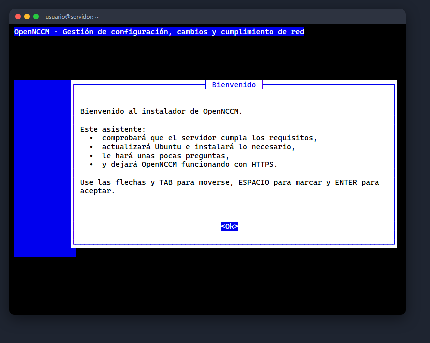
Bienvenida.
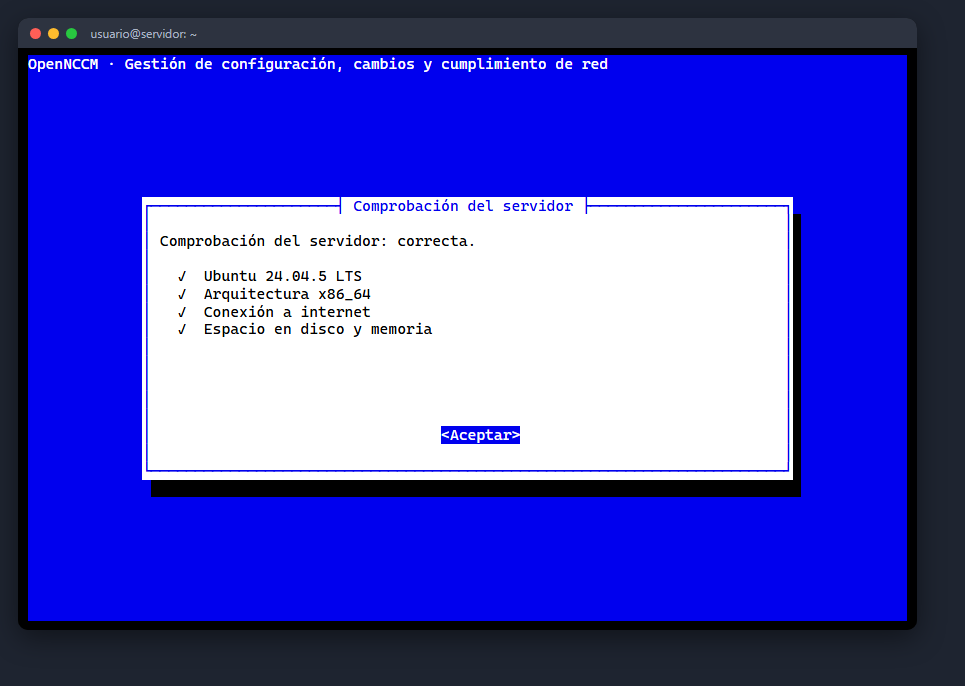
Resultado de la comprobación.
4.2 Actualizaciones de Ubuntu
Recomendado en servidores nuevos: ejecuta apt update y apt full-upgrade. En cualquier caso, el
instalador instala solo los paquetes que falten (git, Python 3, nginx, whiptail, openssl, etc.).
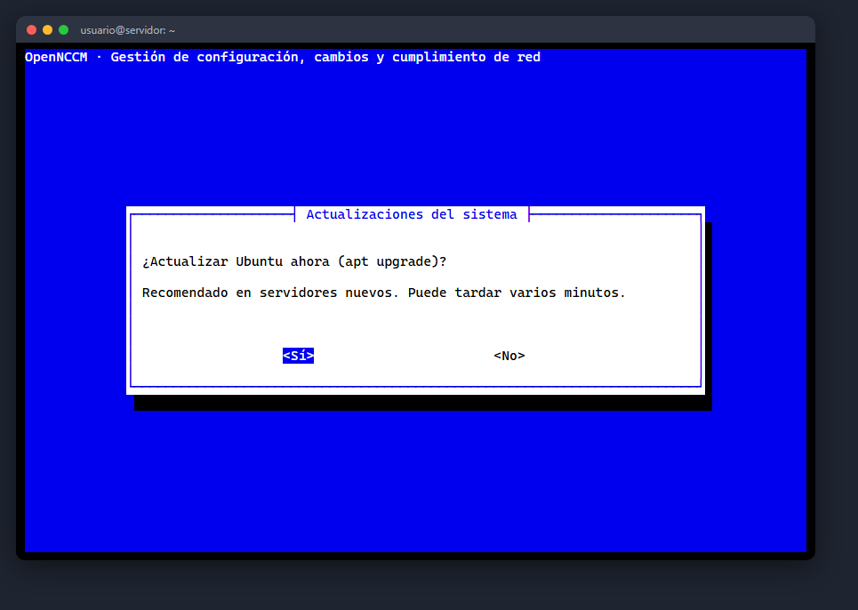
¿Actualizar Ubuntu?
4.3 Dirección, zona horaria y acceso HTTPS
El asistente detecta las direcciones IP del servidor; elija con la que accederán los usuarios o escriba un nombre DNS.
Luego confirme la zona horaria (si no es la correcta, elija región y ciudad en dos menús) y el tipo de acceso web:
Opción
Cuándo usarla
Certificado autofirmado
Redes internas (recomendado). El navegador mostrará un aviso la primera vez.
Let's Encrypt
Si el servidor tiene un nombre DNS público y el puerto 80 accesible desde internet.
Certificado propio
Si su empresa emite certificados: indique las rutas del .crt y del .key copiados al servidor.
Sin HTTPS
Solo laboratorio: la aplicación queda en el puerto 8000 sin cifrar.
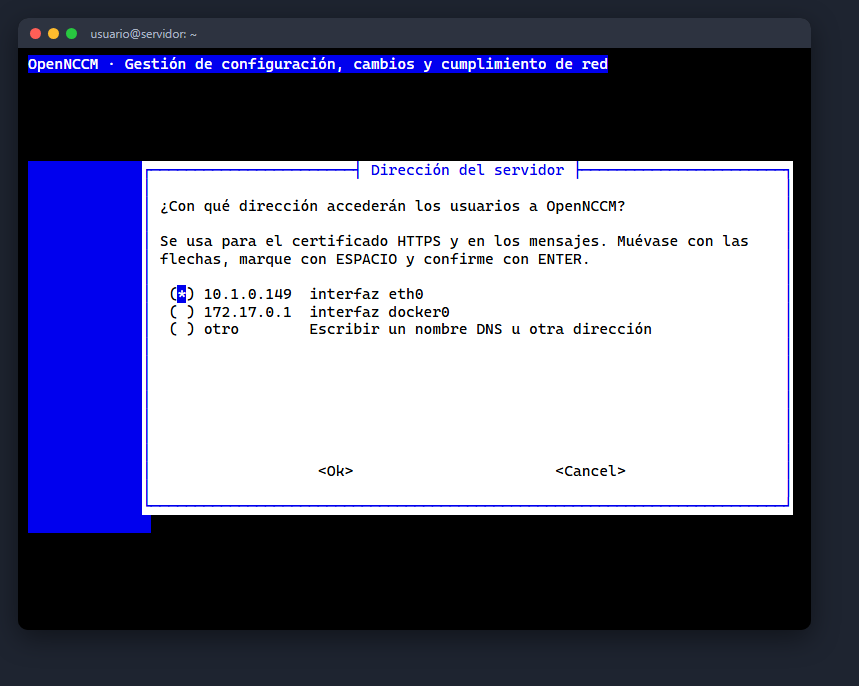
Dirección del servidor.
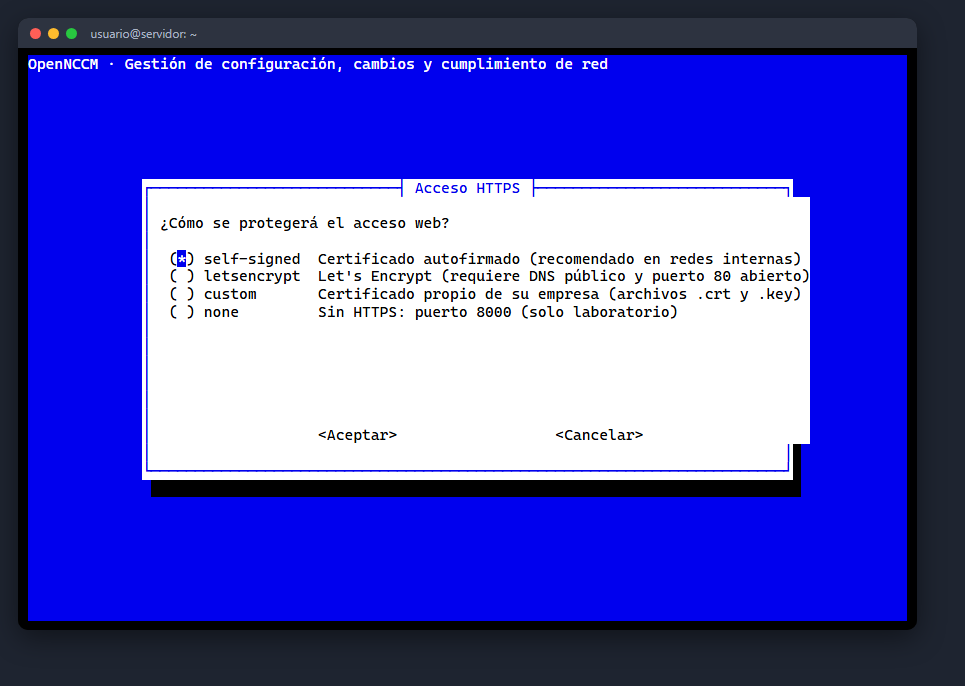
Tipo de acceso HTTPS.
4.4 Base de datos y cortafuegos
SQLite está integrada y no requiere mantenimiento (hasta unos 2 000 equipos). Si elige PostgreSQL, el
instalador lo instala, crea la base y el usuario con una contraseña aleatoria y lo configura. El cortafuegos ufw
se activa permitiendo SSH, HTTPS y syslog; elija «No» si el servidor ya tiene otro cortafuegos.
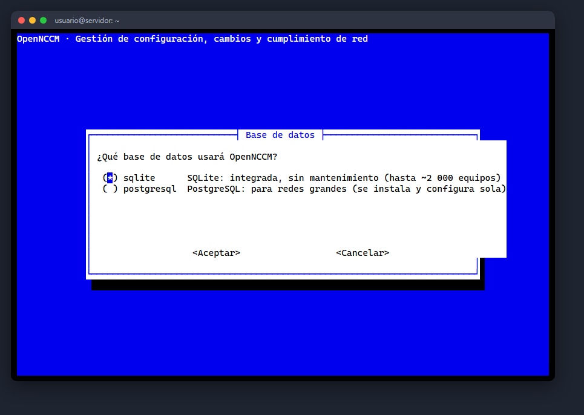
Base de datos.
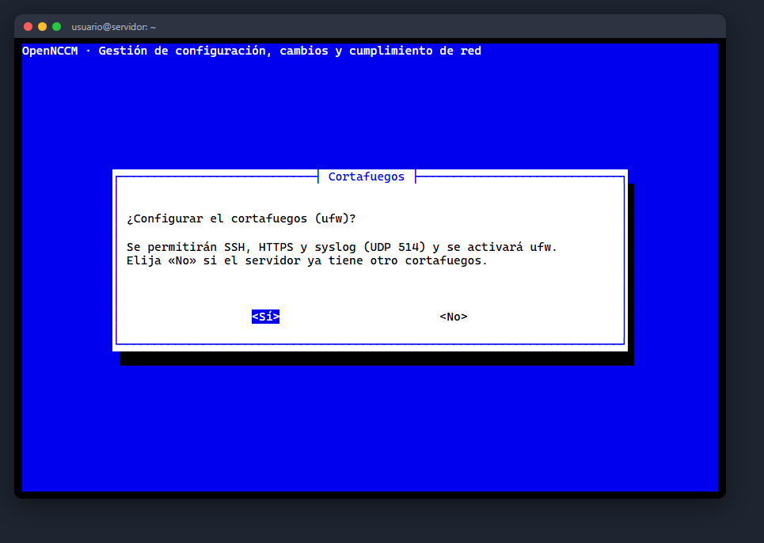
Cortafuegos.
4.5 Administrador y correo
Defina el nombre del usuario administrador y elija entre generar una contraseña segura (se muestra al final) o
escribirla dos veces (mínimo 8 caracteres). Opcionalmente configure el correo para alertas; también puede hacerlo después en
Ajustes.
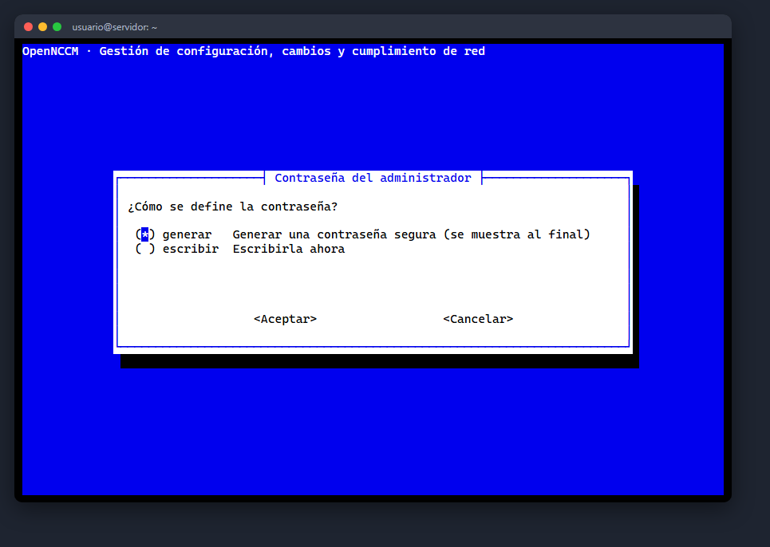
Contraseña del administrador.
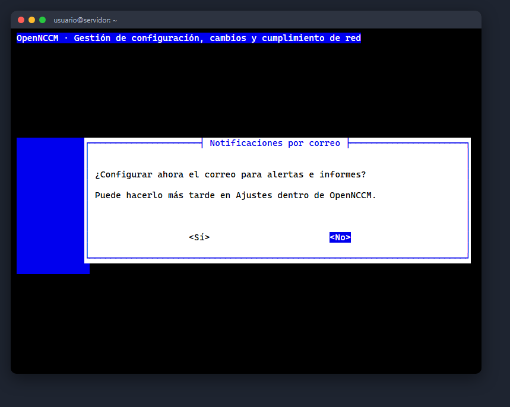
Correo para alertas (opcional).
4.6 Resumen, instalación y resultado
Revise el resumen y confirme. Una barra de progreso muestra cada paso; todo queda registrado en
/var/log/opennccm-install.log. Al terminar se muestran la dirección de acceso y las credenciales, que también se
guardan en /root/opennccm-credenciales.txt (bórrelo después de cambiar la contraseña).
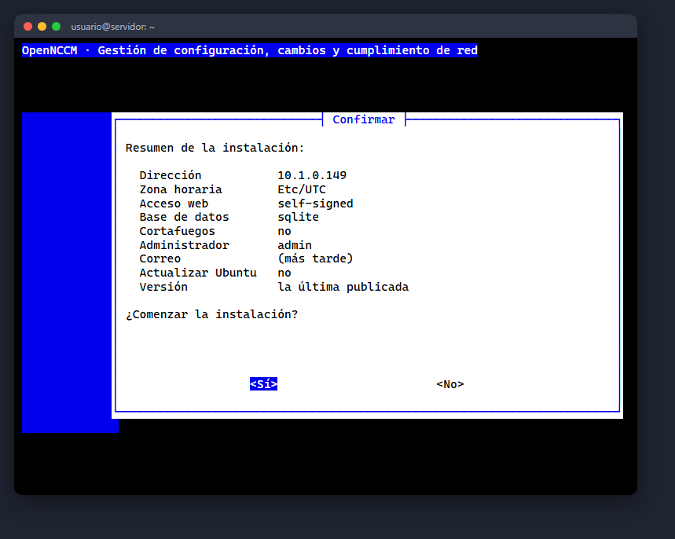
Resumen antes de instalar.
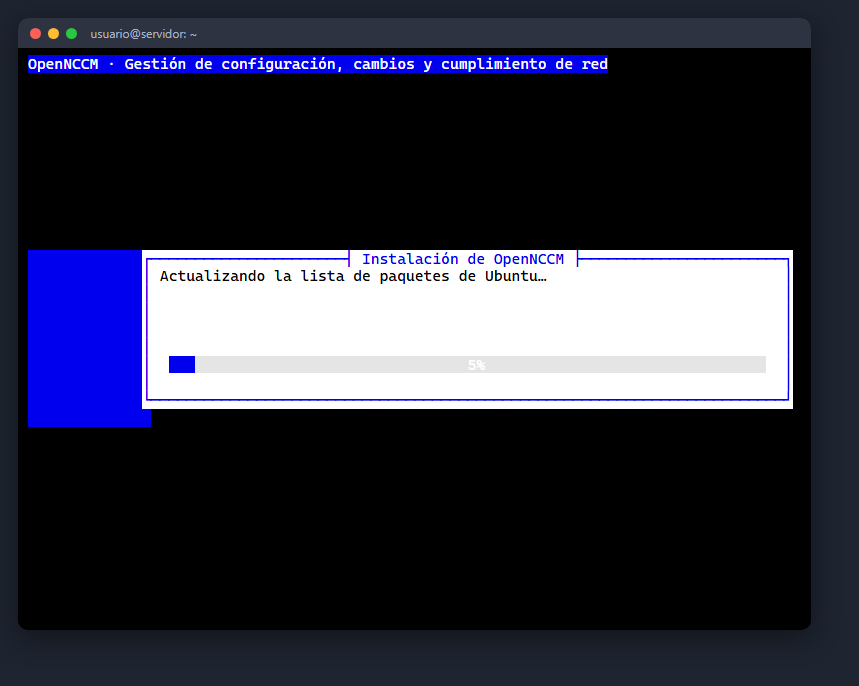
Progreso de la instalación.
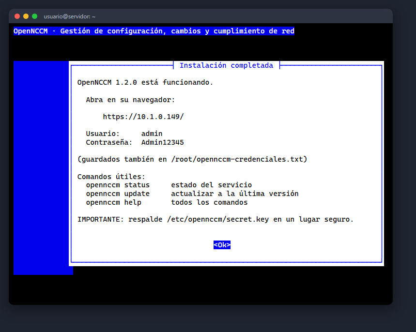
Instalación completada.
Si algo fallaEl asistente muestra en qué paso se detuvo y las últimas líneas del registro. Corrija la
causa y vuelva a ejecutar el mismo comando.
Para automatizar (scripts, Ansible, plantillas de VM) agregue --unattended y las opciones que necesite. No se hace
ninguna pregunta; lo que no indique toma el valor por defecto.
Si el servidor no puede salir a internet, descargue desde otra máquina el archivo opennccm-X.Y.Z.tar.gz de la página
Releases del repositorio, cópielo al servidor y ejecute sudo bash install.sh --source $(pwd) dentro de la
carpeta descomprimida. Igualmente necesitará acceso a los repositorios de Ubuntu y de Python (o un proxy).
Qué hace el instalador
Si vuelve a ejecutar el comando en un servidor donde OpenNCCM ya está instalado, el instalador lo detecta y le ofrece
actualizar en su lugar (sección 14).
6. Primer acceso
En su PC abra el navegador y vaya a https://IP_DEL_SERVIDOR/.
La primera vez el navegador avisará que la conexión «no es privada»: OpenNCCM usa un certificado de su propia autoridad
certificadora, que su PC todavía no conoce. Pulse Configuración avanzada → Continuar y luego instale esa autoridad
(sección 11): desaparece el aviso y el navegador ofrece guardar el usuario y la contraseña.
Ingrese con el usuario y la contraseña que mostró el instalador (también están en /root/opennccm-credenciales.txt).
Pantalla de ingreso. Debajo del formulario se elige el idioma (español o
inglés); el botón 👁 muestra la contraseña escrita y aparece un aviso si Bloq Mayús está activado.
Cambie la contraseña de inmediato: clic en su nombre de usuario (arriba a la derecha) → Mi cuenta.
Mi cuenta: cambio de contraseña y verificación en dos pasos.
Recomendado: en Mi cuenta active la verificación en dos pasos con una app de autenticación del teléfono.
Protección contra fuerza brutaTras 5 contraseñas incorrectas seguidas, la cuenta se bloquea 15 minutos; tras
10 intentos fallidos desde la misma IP, esa dirección se bloquea 15 minutos. Cada intento queda en Auditoría.
7. Configuración inicial
7.1 Credenciales de los equipos
Menú Credenciales. Cree un perfil por cada combinación de usuario/contraseña que usen sus equipos (por ejemplo
«red-admin» y «firewalls»). Si sus equipos Cisco requieren enable, complete también «Enable / secret».
Las contraseñas se guardan cifradas y nunca se vuelven a mostrar.
En la misma página cree los grupos de dispositivos (sede, función o cliente). Los grupos sirven para tareas,
políticas, filtros y para limitar qué equipos ve cada usuario.
Credenciales y grupos.
7.2 Agregar dispositivos
Menú Dispositivos → + Agregar. Complete nombre, IP, fabricante/sistema operativo, protocolo, credencial y grupo.
Al guardar, OpenNCCM hace el primer respaldo automáticamente.
Alta de un dispositivo.
7.3 Importación masiva por CSV
Para muchos equipos, prepare un CSV en Excel (guardar como «CSV UTF-8») con estas columnas y cárguelo al pie de la página
Dispositivos:
name,host,device_type,credential,group,port,protocol,location
core-sw1,10.0.0.1,cisco_ios,red-admin,Core,22,ssh,Datacenter
fw-01,10.0.0.254,fortinet,firewalls,Seguridad,22,ssh,Datacenter
edge-r1,10.0.1.1,juniper_junos,red-admin,WAN,22,ssh,Sucursal Norte
El valor de device_type de cada plataforma está en Administración → Plataformas (página
/vendors). Los grupos que no existan se crean solos.
7.4 Verificar el primer respaldo
Abra el dispositivo. Si el estado es ok verá su modelo, número de serie, versión de
firmware y la primera versión de configuración. Si es error, el recuadro rojo indica la
causa (ver sección 16).
Lista de dispositivos con su estado.
8. Enviar syslog desde los equipos
Para que OpenNCCM detecte los cambios en el momento en que alguien los hace, cada equipo debe enviar sus mensajes
syslog al servidor (UDP 514). Al recibir un aviso de cambio, OpenNCCM espera 20 segundos, respalda el equipo, compara,
alerta y, si está activada, revierte el cambio no autorizado.
AtajoHay configlets listos para Cisco IOS, Junos y Huawei en Configlets → «Configurar syslog hacia
OpenNCCM»: elija los equipos, escriba la IP del servidor en la variable servidor_ncm y apruebe.
El equipo debe estar dado de alta en OpenNCCM con la misma IP desde la que envía el syslog (o con un nombre DNS que
resuelva a ella). Puede comprobar la recepción en Alarmas: aparece un evento «Syslog de cambio».
9. Tareas programadas recomendadas
Menú Tareas. Las expresiones usan el formato cron de 5 campos: minuto, hora, día, mes y día de la semana.
Tarea
Acción
Cron
Significado
Respaldo nocturno
Respaldo de configuración
0 2 * * *
Todos los días a las 02:00
Copia de recuperación
Copia de recuperación de OpenNCCM
30 3 * * *
Todos los días a las 03:30
Auditoría semanal
Auditoría de cumplimiento
0 6 * * 1
Lunes a las 06:00
Vulnerabilidades
Escaneo de vulnerabilidades (NVD)
0 4 * * 0
Domingos a las 04:00
Informe semanal
Enviar informes por correo
0 7 * * 1
Lunes a las 07:00
Tareas programadas con su próxima ejecución.
10. Notificaciones
Menú Ajustes → Notificaciones. Configure uno o varios canales y pulse Enviar notificación de prueba.
Canal
Qué completar
Correo
Servidor SMTP, puerto (587 con STARTTLS o 465 con SSL), usuario, contraseña, remitente y destinatarios separados por coma.
Microsoft Teams / Slack / Mattermost / Google Chat
URL del incoming webhook del canal.
Telegram
Token del bot (de @BotFather) y el ID del chat o grupo.
La «severidad mínima» define qué se notifica: warning envía cambios de configuración, infracciones y
fallos; critical solo reversiones automáticas y vulnerabilidades críticas.
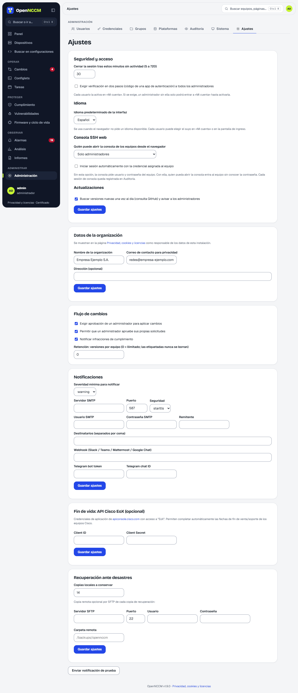
Ajustes: flujo de cambios, notificaciones, API Cisco y recuperación.
11. Certificado HTTPS propio
El instalador crea una autoridad certificadora propia de OpenNCCM («OpenNCCM CA») y, con ella, el certificado HTTPS del
servidor. La autoridad está restringida a este servidor (su IP y su nombre): aunque alguien obtuviera su clave, no
serviría para suplantar otros sitios. Instálela una vez en cada PC desde el que use OpenNCCM:
En la pantalla de ingreso pulse «¿El navegador dice «No es seguro» o no ofrece guardar la contraseña?» (o vaya a
https://IP_DEL_SERVIDOR/certificado) y descargue OpenNCCM-CA.crt.
Windows: abra el archivo → Instalar certificado → Equipo local → «Colocar todos los certificados en el siguiente
almacén» → Entidades de certificación raíz de confianza → Finalizar. Cierre y abra el navegador.
La página explica también macOS, Linux, Firefox, Android e iPhone.
Después, al entrar con la misma dirección, el candado aparece sin avisos y el navegador ofrece guardar la contraseña (Chrome y
Edge no lo hacen en sitios con error de certificado). Las instalaciones anteriores a la 1.6.0 pasan a este certificado al
actualizar (habrá que instalar la autoridad una vez). Si prefiere no instalar nada en los PC, reemplace el certificado por uno de
la CA de su empresa o de Let's Encrypt:
Más seguroLimite el syslog y la web a sus redes de gestión, por ejemplo:
sudo ufw allow from 10.0.0.0/8 to any port 514 proto udp.
13. Copias de seguridad y recuperación
OpenNCCM guarda todo lo importante en dos lugares:
Ruta
Contenido
/var/lib/opennccm
Base de datos (configuraciones, historial, usuarios, políticas), imágenes de firmware y copias.
/etc/opennccm
secret.key (clave de cifrado) y opennccm.env (configuración del servicio).
Desde la interfaz
Menú Sistema → Crear copia ahora. Programe la copia diaria en Tareas y, en Ajustes → Recuperación ante
desastres, defina cuántas copias conservar y un servidor SFTP remoto donde enviar cada copia.
Sistema: copias de recuperación y comando de restauración.
Desde la consola
$ sudo opennccm backup # sin la clave$ sudo opennccm backup --with-key # incluye secret.key: proteja el archivo
Restaurar (en el mismo servidor o en uno nuevo)
En un servidor nuevo, instale primero OpenNCCM (secciones 3 a 5).
Si la copia no incluye la clave, copie el secret.key original a /etc/opennccm/secret.key.
El comando detiene el servicio, restaura y lo vuelve a iniciar.
La clave es imprescindibleSin el secret.key correcto las configuraciones y contraseñas
respaldadas no se pueden descifrar. Guárdela en un lugar seguro, separado de las copias (por ejemplo, en el gestor de
contraseñas del equipo).
14. Actualizar a una versión nueva y volver atrás
Las versiones nuevas se publican en el repositorio de GitHub. Cuando hay una, OpenNCCM avisa a los administradores con un
mensaje emergente. Se puede actualizar desde la web (Administración → Sistema → Actualizaciones → Actualizar ahora, desde
la 1.6.0) o con un comando en el servidor; ambos hacen exactamente lo mismo:
Instala una versión concreta (también sirve para bajar de versión)
opennccm status
Indica si hay una actualización disponible
La versión instalada aparece al pie de todas las páginas. Las copias previas se guardan en
/var/lib/opennccm/pre-update/ (las 5 más recientes).
Volver a la versión anterior
$ sudo opennccm rollback
Muestra un menú con las copias previas (la más reciente arriba) y restaura el código y la base de datos de ese momento.
AtenciónVolver atrás restaura también la base de datos de ese momento: se pierden los respaldos y cambios
registrados después de actualizar (la base descartada se conserva con el sufijo .descartada-…).
Buenas prácticas
Revise las novedades con opennccm update --check antes de actualizar.
Si el servidor es una VM, tome una instantánea antes de actualizar.
Actualice fuera del horario de respaldos programados.
15. PostgreSQL para instalaciones grandes
SQLite es suficiente para la mayoría de las redes. Para miles de equipos o muchos administradores a la vez, elija PostgreSQL en el asistente (o use --db postgresql): el instalador instala PostgreSQL, crea la base opennccm y su usuario con una contraseña aleatoria y lo deja configurado. Decídalo al instalar: no hay migración automática de SQLite a PostgreSQL.
Con PostgreSQL, las copias previas a cada actualización usan pg_dump, y la vuelta atrás, pg_restore.
16. Verificación y solución de problemas
Lista de verificación
Comprobación
Cómo
Resultado esperado
Servicio activo
systemctl status opennccm
active (running)
Web responde
curl -k https://localhost/healthz
{"status":"ok"}
Syslog escuchando
sudo ss -ulpn | grep 514
proceso python en 0.0.0.0:514
Llega a un equipo
ssh USUARIO@IP_EQUIPO desde el servidor
pide contraseña
Primer respaldo
Ficha del dispositivo
estado ok + versión #1
Alertas
Ajustes → Enviar notificación de prueba
llega el mensaje
Problemas frecuentes
Síntoma
Causa probable y solución
La web no abre
Ver logs: journalctl -u opennccm -n 100 y sudo nginx -t. Revise el cortafuegos (puerto 443).
«No se pudo abrir syslog UDP/514» en el log
Otro servicio usa el puerto (p. ej. rsyslog con recepción UDP activada). Desactive esa recepción o cambie NCM_SYSLOG_PORT en /etc/opennccm/opennccm.env.
Respaldo: «TCP connection to device failed» o timeout
Sin conectividad o SSH cerrado. Pruebe ssh desde el servidor; revise ACL de VTY en el equipo.
Equipo antiguo: «no matching host key type found. Their offer: ssh-rsa» o «Incompatible ssh peer»
El equipo (p. ej. Ubiquiti EdgeSwitch, Cisco IOS 12.x, HP ProCurve antiguos) solo admite algoritmos SHA-1. Desde la versión 1.3.1 OpenNCCM los acepta automáticamente solo como última opción, así que actualice con sudo opennccm update. Los equipos modernos siguen usando algoritmos modernos. Lo recomendable a largo plazo es actualizar el firmware del equipo.
«El equipo pide contraseña para el modo privilegiado (enable)…» o «Failed to enter enable mode»
El equipo exige una contraseña de enable distinta de la de ingreso (OpenNCCM ya prueba sin contraseña y con la de ingreso). Escríbala en Credenciales → Enable / secret de la credencial asignada al equipo y vuelva a respaldar.
El botón «Actualizar» de la web muestra «fatal: $HOME not set»
Error de la versión 1.6.0/1.6.1, corregido en la
1.6.2. Actualice una vez desde la consola con sudo opennccm update; a partir de ahí el botón funciona.
El navegador no ofrece guardar el usuario y la contraseña
El sitio tiene un aviso de certificado. Instale la
autoridad «OpenNCCM CA» en el PC (sección 11) y entre siempre con la misma dirección.
Perdí el teléfono de la verificación en dos pasos
Otro administrador la quita en Usuarios → Editar, o en el
servidor: sudo opennccm reset-2fa USUARIO.
«La cuenta está bloqueada temporalmente»
5 contraseñas incorrectas seguidas: espere 15 minutos o pida a un
administrador que le fije una contraseña nueva (eso la desbloquea).
La consola SSH web se desconecta al abrirla
Solo funciona con equipos por SSH y para quien tenga permiso (Ajustes →
Seguridad y acceso). Detrás de otro proxy, éste debe permitir WebSocket.
Respaldo: «Authentication failed»
Usuario/contraseña incorrectos en la credencial asignada.
Respaldo: «Pattern not detected»
El prompt o el modo privilegiado no son los esperados: falta la contraseña de enable, o el device_type no corresponde al equipo.
Respaldo: «salida inválida»
El comando de respaldo no existe en esa versión. Defina un comando de respaldo personalizado en el dispositivo.
Los cambios no se detectan en tiempo real
El equipo no envía syslog, lo envía desde otra IP, o un cortafuegos bloquea UDP 514. Verifique con sudo tcpdump -ni any udp port 514.
Telnet «no soportado»
Esa plataforma no tiene variante Telnet en Netmiko: use SSH.
Olvidó la contraseña o no puede ingresar
sudo opennccm users para ver los usuarios y sudo opennccm reset-password USUARIO 'NuevaClave123'. Tras 10 intentos fallidos el ingreso se bloquea 15 minutos: sudo opennccm restart lo desbloquea.
Firmware: «MD5 no verificado»
Imagen dañada o espacio insuficiente; en Cisco habilite ip scp server enable.
17. Desinstalar
Antes de desinstalarCree y descargue una copia de recuperación con la clave si quiere conservar los datos.
$ sudo opennccm uninstall # conserva los datos y la clave$ sudo opennccm uninstall --purge # borra TODO, incluidos datos y clave
Pide escribir DESINSTALAR para confirmar.
18. Referencia
Rutas
Ruta
Contenido
/opt/opennccm
Código de la aplicación y entorno Python (.venv)
/var/lib/opennccm/opennccm.db
Base de datos SQLite
/var/lib/opennccm/firmware
Imágenes de firmware cargadas
/var/lib/opennccm/system-backups
Copias de recuperación
/var/lib/opennccm/pre-update
Copias previas a cada actualización
/etc/opennccm/secret.key
Clave AES-256
/etc/opennccm/opennccm.env
Variables del servicio
/etc/systemd/system/opennccm.service
Servicio systemd
/etc/nginx/sites-available/opennccm
Configuración de nginx
Variables de /etc/opennccm/opennccm.env
Variable
Por defecto
Uso
NCM_DATABASE_URL
SQLite
Cadena de conexión (PostgreSQL)
NCM_SYSLOG_PORT
514
Puerto UDP del receptor syslog
NCM_SYSLOG_ENABLED
1
0 para desactivar el receptor
NCM_WORKERS
16
Equipos procesados en paralelo
NCM_NVD_API_KEY
(vacío)
Clave gratuita de NVD: acelera el escaneo de CVE
Tras editar el archivo: sudo systemctl restart opennccm.
Comandos
Comando
Acción
opennccm status
Estado, versión, dirección, espacio y actualizaciones
Registro de la instalación: /var/log/opennccm-install.log. Opciones elegidas al instalar:
/etc/opennccm/install.conf (las reutilizan las actualizaciones).
Cómo se valida cada versiónAntes de publicar una versión, GitHub ejecuta automáticamente en servidores Ubuntu 22.04 y 24.04: las pruebas de la aplicación contra un router Cisco simulado, una instalación desatendida, una instalación con el asistente de menús, una actualización, una vuelta atrás y la recuperación automática ante una versión rota. Aun así, valide la instalación en un servidor de pruebas antes de pasar a producción.